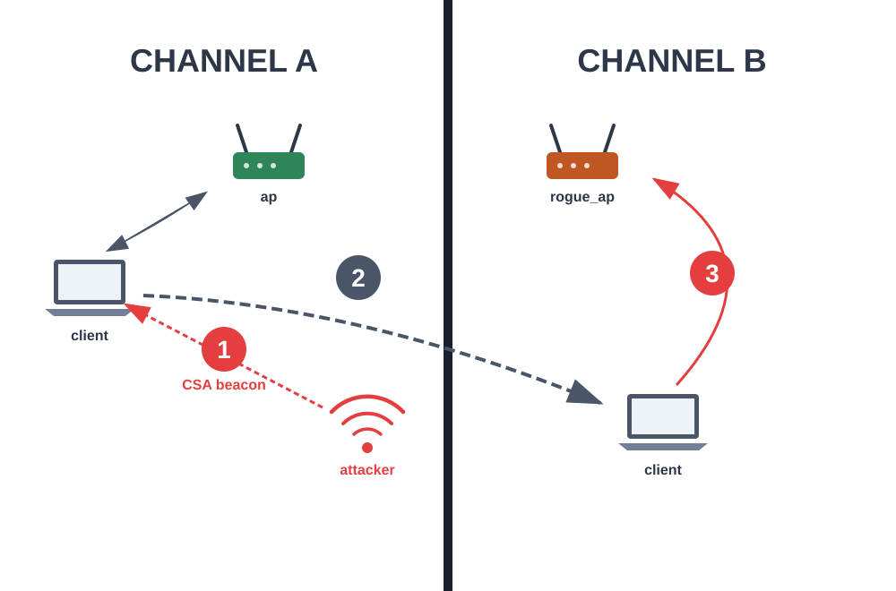

prerequisites: client connected to legit ap
The attacker sends CSA beacons causing a connected client to switch Wi-Fi channels, disconnecting it from the legitimate AP. Optionally can attacker create rogue AP on new channel with WPA2 to downgrade and het WPA2 hash
variants: optionally attack can have rogue AP to check downgrade and WPA2 password
success: client disconnected from ap, in second variant try to connect to rogue AP

OCV is protection, what add channel info (OCI) info into some frames, beacon protection is needed. Not very supported, mobile devices have better support (//TODO add source)
Run CSA_rogueAP_internal_filler first to get data
Run CSA_rogueAP_Dlink_filler first to get data
Run CSA_external_client_filler first to get data